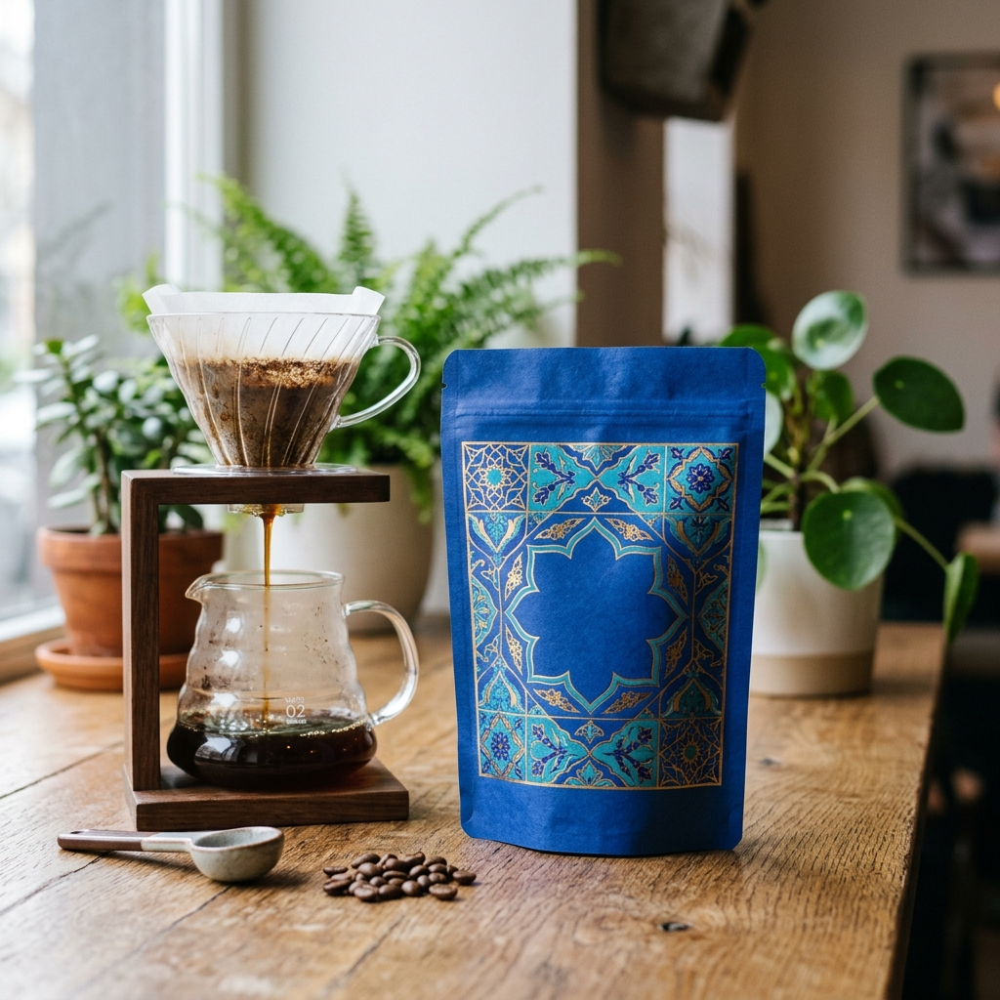
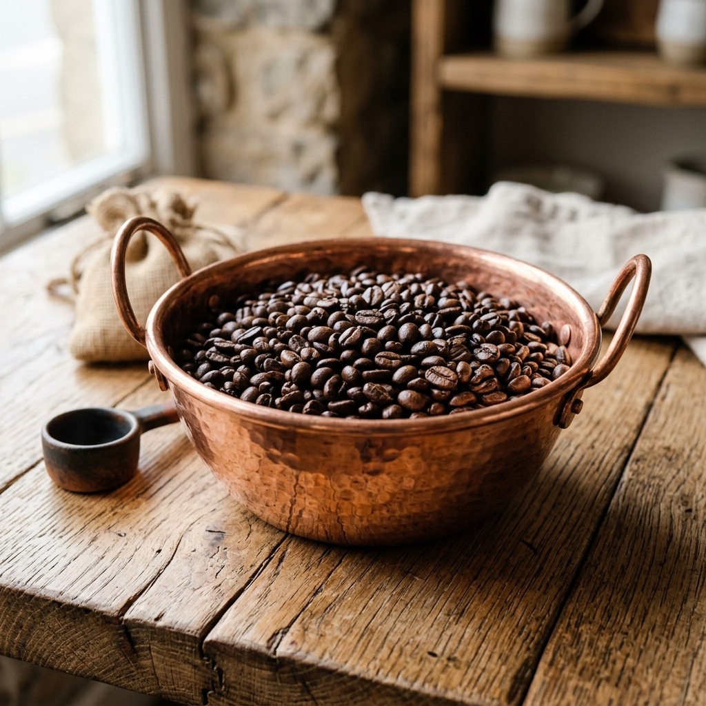
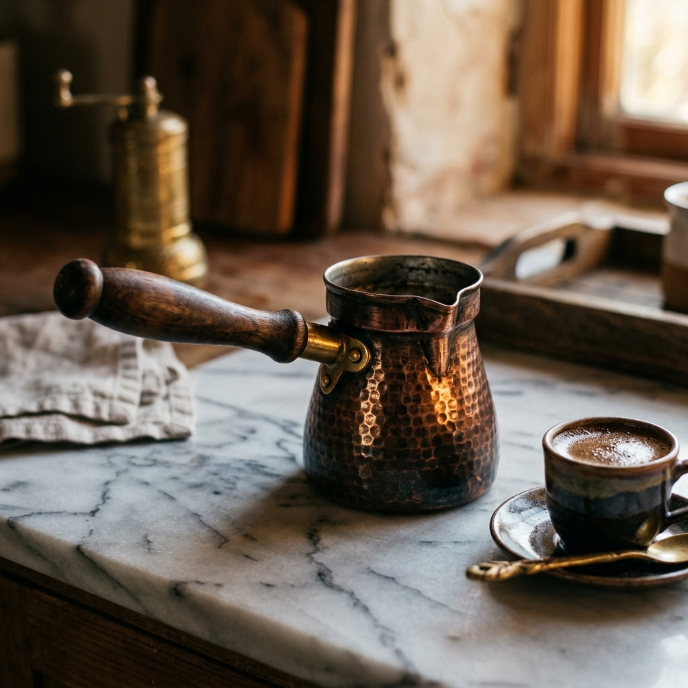
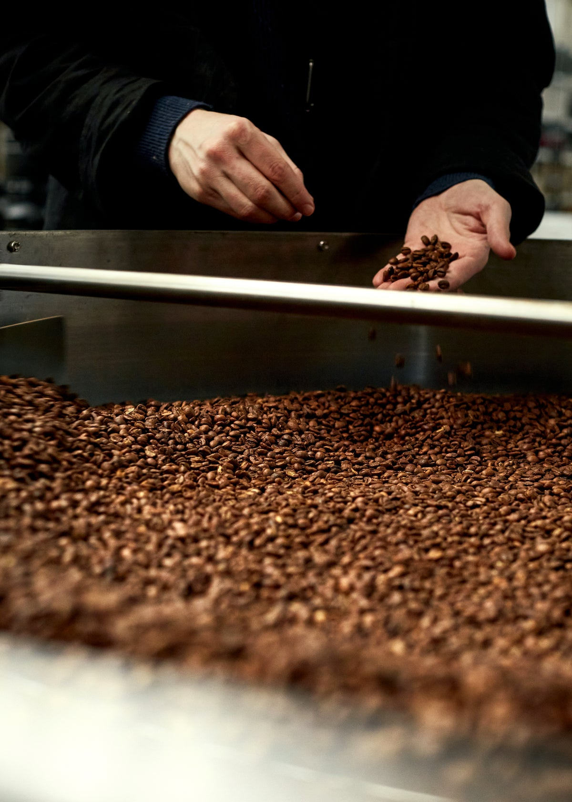
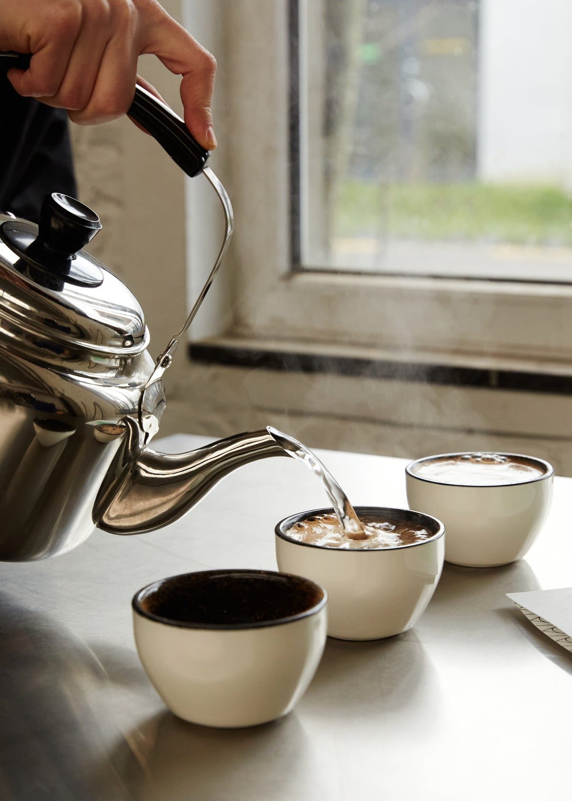
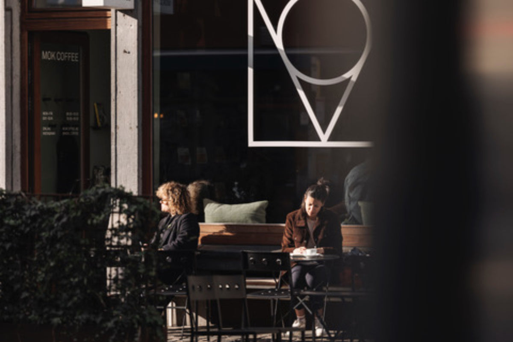
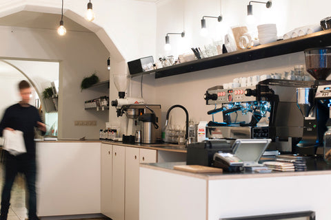
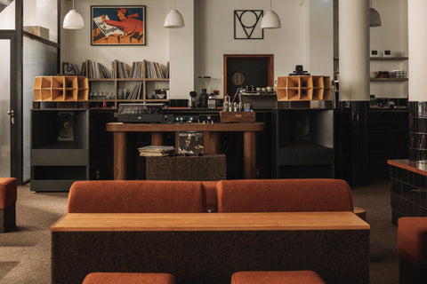

Filtre Kahve Aboneliği
650,00 ₺
Mevsimsel seçki · Filtre
ÇEKİRDEKTEN FİNCANA, ÖZENLE.
Dürüst. Karakterli. Ödünsüz.
Her fincanda, aynı tutkuyla.
01 / KAHVE SEÇKİSİ
İyi bir gün, iyi bir kahveyle başlar.

650,00 ₺
Mevsimsel seçki · Filtre

450,00 ₺
Yöresel seçki · Çekirdek

1.200,00 ₺
El İşçiliği · Bakır
02 / KENDİ RİTÜELİNİ BUL
Her seferinde başka bir köken, aynı özen.
Kahve keşfin, kapına kadar gelsin.
03 / İYİ KAHVENİN ARDINDA
İyi kahve, çekirdeğin yetiştiği yerde başlar. Toprağın, iklimin ve üreticinin emeğinin izini fincana kadar takip ederiz.
Mevsimin ritmine kulak veren bir seçki; kahvenin kendini anlatmasına alan açan bir kavurma anlayışı. Bizim için her detay, daha iyi bir fincanın parçası.


BİR FİNCANDAN DAHA FAZLASI
Doğru çekirdek, dikkatli kavurma ve merakla geçen saatler. Kahveyi özel yapan, bu küçük ayrıntıların bir araya gelmesi.
Bizim sevdiğimiz kahve; kökenini unutmayan, kendine özgü ve paylaşmaya değer olan.
Seçkiyi keşfet ↗04 / BİR KAHVEDE BULUŞALIM

Mersin, Türkiye

Mersin, Türkiye

Mersin, Türkiye